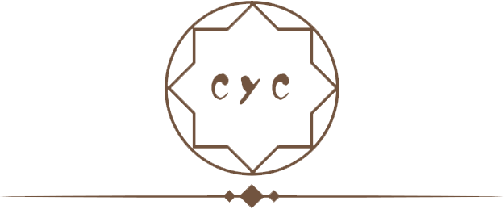

执一人之手
执一人之手
守一城终老

姓名:陈俞成
籍贯:广西玉林
身高/体重:165cm/45kg
出生日期:1999年10月06号
政治面貌:共青团员
期望职业：web前端开发工程师
前端路上的小白，熟练掌握html，Css，JavaScript基础知识，学习过jQuery，bootstrap等框架，会简单使用git，具有良好的编码习惯，在学习中熟练使用CSS预处理器LESS进行项目样式单元的开发
未来一段时间打算学习HTML5plus当然还要不断的学习es6，es5这些基础，前端路上的小白，希望自己可以在前端的路上不断前进。计划(2020-2022)希望自己熟练掌握的有JavaScript(es6,Node.js,webpack)或是其他类似语言或工具，当然不排除会有别的新知识
-
HTML/HTML5
- 80% CSS/CSS3
- 80% JS
- 40% Bootstrap
- 50% PHP
- 35% Mysql
- 34%